0KUF-005
No Windows Vista, 7, 8, Server 2008 ou Server 2012, o protocolo WSD (Web Services on Devices) pode ser utilizado para imprimir. Se quiser usar WSD, instale primeiro o driver da impressora e depois adicione uma impressora de rede.
1
Faça o login no computador com uma conta de administrador.
2
Abra a pasta Impressora.Exibindo a pasta Impressora
3
Clique em [Adicionar uma impressora] ou [Adicionar impressora].
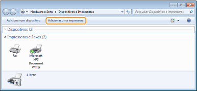
4
Clique em [Adicionar uma impressora local].
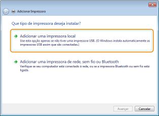
5
Verifique se [LPT1] foi selecionada em [Utilizar uma porta existente] e clique em [Avançar].
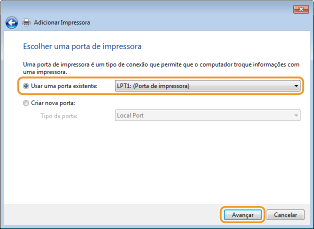
6
Clique em [Com Disco].
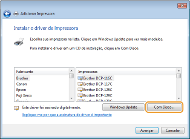
7
Clique em [Procurar].
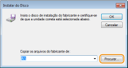
8
Selecione a pasta onde o driver da impressora está armazenado, selecione o arquivo Inf e clique em [Abrir].
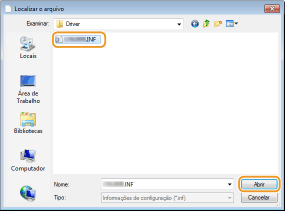
Selecione a pasta que contém o driver da impressora da seguinte maneira.
Para sistemas operacionais de 32 bits
Selecione a pasta no [UFRII] [brazilian_portuguese] [32BIT] [Driver] CD-ROM, DVD ou arquivo baixado.
[brazilian_portuguese] [32BIT] [Driver] CD-ROM, DVD ou arquivo baixado.
Selecione a pasta no [UFRII]
Para sistemas operacionais de 64 bits
Selecione a pasta em [UFRII] [brazilian_portuguese] [x64] [Driver] CD-ROM, DVD ou no arquivo baixado.
Selecione a pasta em [UFRII]

Se não souber se o sistema operacional é de 32 ou 64 bits Verificando a arquitetura de bits
9
Clique em [OK].
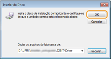
10
Selecione sua impressora e clique em [Avançar].
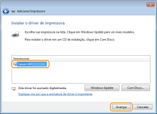
11
Mude o nome da impressora conforme necessário e clique em [Avançar].
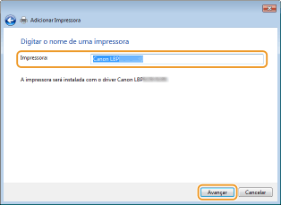
 |
A instalação começará.
|
12
Selecione [Não compartilhar esta impressora] e clique em [Avançar].
Se quiser compartilhar a impressora, habilite o compartilhamento de configurações da impressora em Adicionando uma impressora em rede (Definindo as configurações no servidor de impressão).
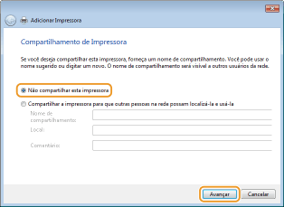
13
Clique em [Concluir].
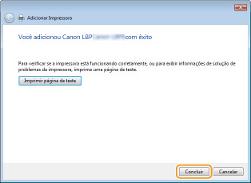
|
|
O ícone da impressora instalada aparecerá na pasta de impressoras.
 |
1
Abra a pasta de redes.
No Windows Vista ou Server 2008
[Iniciar] [Rede].
[Iniciar]
Windows 7/Server 2008 R2
[Iniciar] [Computador] [Rede].
[Iniciar]
Windows 8/Server 2012
Clique com o botão direito no canto inferior esquerdo da tela e selecione [Explorador de arquivos] [Rede].
Clique com o botão direito no canto inferior esquerdo da tela e selecione
2
Clique com o botão direito no ícone da impressora adicionada e clique em [Instalar].
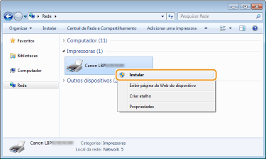
|
|
A instalação para uso de WSD estará concluída quando o ícone da impressora aparecer na pasta de impressoras.
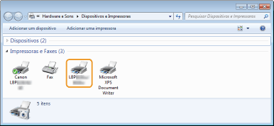 |
 |
|
Apagando ícones de impressora desnecessários
Quando terminar de instalar a impressora em rede, o ícone adicionado na etapa 13 em Instalação do driver da impressora não será mais necessário. Par apagá-lo, clique com o botão direito e selecione [Remover dispositivo] ou [Excluir]
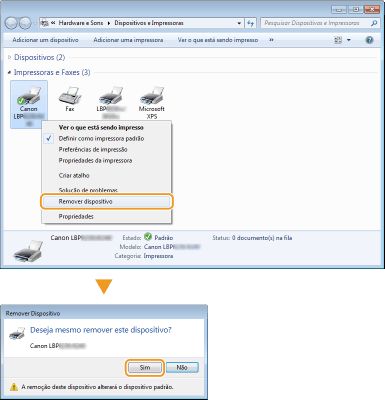 |